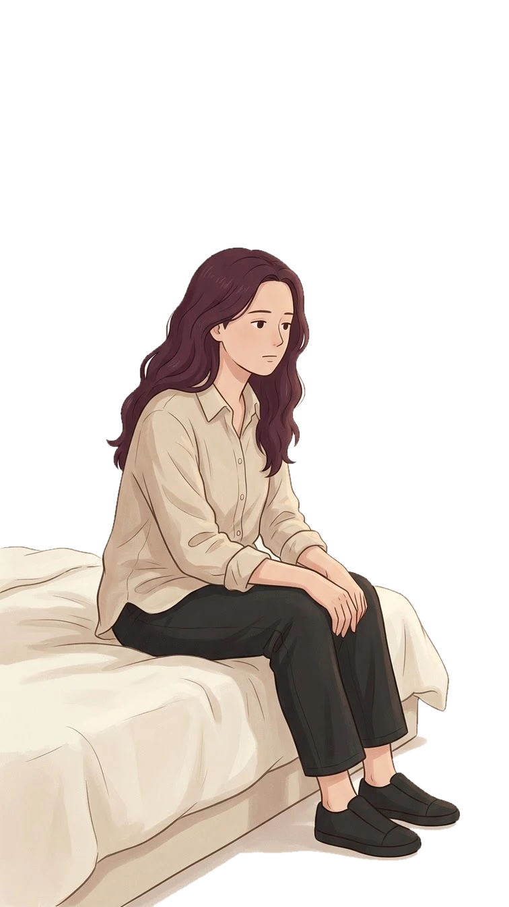
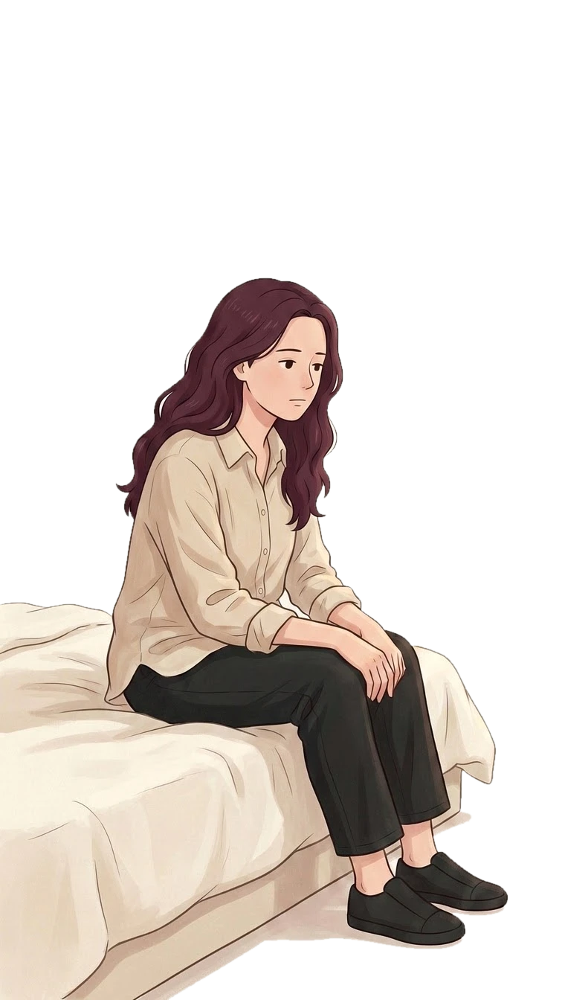

Dormí todo el fin de semana.
Llegó el lunes y amanecí igual de vacía.
No es sueño atrasado.
Dormir no lo repone.
Estoy funcionando — pero no estoy.
Quizá no necesito descansar más.
Quizá esto que cargo tiene otra forma,
y todavía no tiene nombre.